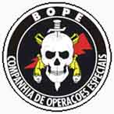
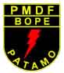

O grupo de elite da Polícia Militar de Brasília/DF chama-se BOPE, o Batalhão de Operações Especiais.
Procurando por vídeos e fotos de cada grupo tático existente no Brasil, percebi que poucas instituições conseguiram enxergar a internet como um terreno a ser aproveitado para divulgar como seus servidores são preparados, e que tipo de missões estão aptos a enfrentar. Talvez não percebam que esta seria uma das formas de estreitar a comunicação com a sociedade civil, o que poderia levar futuramente ao fim do preconceito que paira sobre as instituições policiais, depois de seu nauseante uso indiscriminado para atender interesses político-militares durante a Ditadura.
A PMDF acompanhou as mudanças, e mantém no ar um site dedicado ao seu BOPE, bastante elaborado e com vasto acervo de imagens, e com textos direcionados à sociedade civil.O BOPE / PMDF, fundado em 1999 é subdividido em setores com especialidades em áreas diversas, como o COE (Companhia de Operações Especiais), o CCDC (Choque) e o CECAP (Cães).
Bom, o site deles é tão completo que nem vale repetir aqui as mesmas informações, a não ser que você leitor de Brasília tenha material para nos ajudar, daí faremos um update neste artigo. No fim, vale para o resto do Brasil conhecê-los.Vejam pois um vídeo com recortes de treinamentos dos militares do BOPE.
[youtube Gl2mx-3jygI]
Link para o vídeo com treinamento do BOPE, se não abriu acima.
Veja também esse vídeo do BOPE treinando ocorrência com reféns em um ônibus, que infelizmente acabou gerando uma grande confusão na capital brasileira, conforme relatado na época pelo Blog da Segurança Pública.